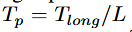
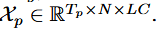
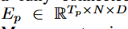
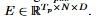
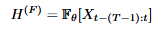
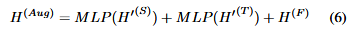
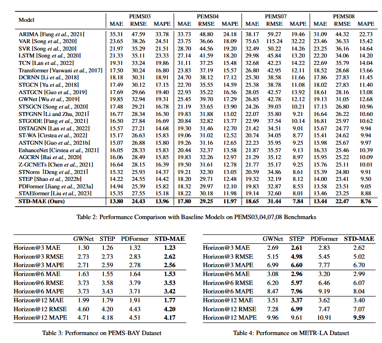

STD-MAE - 学习笔记
STD-MAE - 学习笔记
1. 文章摘要
与典型的多变量时间序列相比，时空数据和时序数据的关键区别在于时空异质性。简单来说就是不同地点（市中心和郊区）和日期（比如工作日和周末）的时间序列规律可能有所不同，但他们在相似环境中表现出一致且可预测的模式。因此，准确预测时空数据的关键在于有效捕捉这种时空异质性。之前的研究者们提出了许多关于时空预测的尝试，比如把图卷积网络（GCN）嵌入到时序卷积网络（TCN）或递归神经网络（RNN）中，或者沿着时空轴应用Transformer架构模型。然而这些模型在区分时空异质性方面存在困难。如何学习清晰的时空异质性仍然是时空预测的主要挑战。 基于此，Gao等人提出一种新的时空解耦掩码预训练框架（STD-MAE）。它为学习清晰且完整的时空异质性提供高效且有效解决方案，且预训练与下游任务解耦，使得学习到的时空异质性可以无缝集成到下游任务中。
文章举例说明：不同检测器在时空规律上相差很大，导致同一时间点，不同流量检测的时间序列相近的情况下，未来流量的变化趋势差距可能非常大，导致预测不准。文章把这种现象称为“时空幻觉”。
论文原文：https://arxiv.org/abs/2312.00516
代码地址：https://github.com/Jimmy-7664/STD-MAE
2. 模型结构
时空解耦掩码自编码器由时间自编码器（T-MAE）和空间自编码器（S-MAE）组成，他们具有相似的结构。S-MAE在空间维度上应用自注意力机制，而T-MAE则在时间维度上应用自注意力机制。 从模型结构上看，时间Encoder和空间Encoder的作用是分别对时空状态进行表征。所以整个模型的训练分成两阶段：预训练阶段和下游任务的训练阶段。 ## 2.1 预训练阶段
在预训练阶段以以掩码重构的方式进行预训练，此时模型的结构是Encoder-Decoder，采用自监督的方式进行训练：掩码一定比例的序列并尝试还原。预训练结束后，只使用Encoder即可表征时空。Decoder不再使用。 预训练阶段，首先对预测的输入进行分块，采用分块的方式进行输入。每条长序列分割成Tp个Patch。其中

每个patch包含L条数据，每个数据里面又有C个channel，所以时空Encoder的输入尺寸是

随后，输入Xp经过全连接层，进行维度嵌入，嵌入后维度变成

随后对于嵌入后的矩阵，进行二维时空位置编码。传统的Transformer是位置编码，是一维的编码，本文面向有时空两个维度，因此要进行时空二维编码，掩码的生成方式依然是使用正弦和余弦函数进行修改。
获得位置编码矩阵Epos后，和嵌入矩阵Ep相加，得到最终输入嵌入E：

输入嵌入E随后分别进行时空掩码，获得 可见的掩码嵌入。其中，时间维度上是对时间进行掩码，假设掩码比例是r，那么时间掩码（T-MAE）后的张量尺寸就是Tp(1-r)×N×D，空间掩码（S-MAE）后的张量尺寸就是Tp×N（1-r）×D。 文章对掩码的比例r进行了敏感性分析，虽然在图像上，更高的掩码比例可以获得更好的效果，但是在时空领域，25%的掩码率效果是最好的。
掩码后的矩阵随后输入到Transformer Layers， 输出的隐向量即为时序和空间的状态表达。但是只得到状态表达空间是没法训练的，还需要通过下游decoder恢复原始的序列。那么整个的过程和Encoder是相反的：首先，对于掩码掉的部分进行恢复，填充Padding，填充后对填充的部分进行位置编码，随后输出被掩码掉部分的序列，尝试对掩码的序列进行还原。并使用还原后掩码部分的序列与原序列掩码的部分进行Loss计算，可表示为：
2.2 下游任务训练阶段
STD-MAE可以无缝与现有的预测框架整合。该操作是添加时空状态表达，把STD-MAE训练好的Representation直接添加到预测器的隐藏状态层中。
比如，预测期经过某层，可以得到包含隐信息的张量Hf，这里Hf相当于是经过下游预测器的表征层之后的输出。

随后，对下游任务的表征层应用ST-Encoder，具体应用方法很简单：把得到的ST-Encoder在时间维度上截取最后的一个时间戳，形成N×T’×D的张量，T’=1，然后经过全连接层和原状态表征直接加起来，得到新的状态表征，即：

对应模型结构图中彩色方块。最终，经过FC层，输出最终的预测结果Y。
文章指出，下游任务可以是接标准预测任务的PipeLine，可以等效替换任意的模型。文章害测试了DCRNN、MTGNN、STID、STAE、GWNet作为下游的预测期，没改下游的代码，发现GWNet是效果最好的。 这里有一个细节，就是时空编码器和原始状态表征 接入的位置，看起来是接入在模型的中间层，偏后的位置，相当于原模型也对数据进行了一部分表征。
3 实验部分
模型在多个数据集上和多个历史模型进行了测试，评测指标MAE、 RMSE、MAPE，用过去的12个时间步预测未来的12个时间步，取得了SOTA的效果。

MASK的消融实验部分，对比了只使用时间维度Mask、空间维度Mask，时空融合MAE，以及不用MASK，最终结果显示是时空解耦的方式的MAE效果最好
对于不同的预测器，只要是用了STD-MAE进行增强，模型的指标性能都有所提升，GWNet增强效果最好。